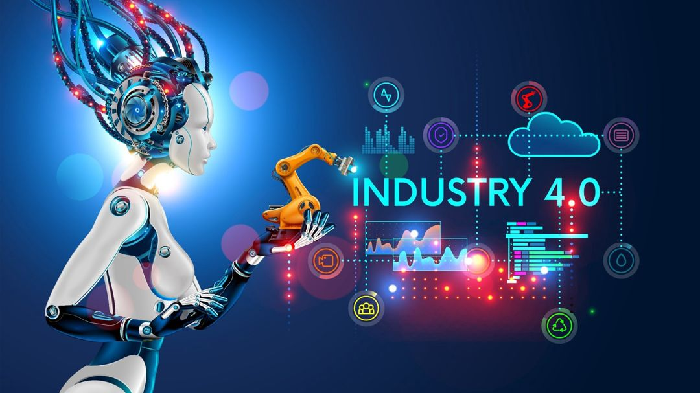

1.0

dikutip dari kimbelawan.id
Revolusi Industri 1.0 merupakan salah satu momen paling signifikan dalam sejarah manusia, di mana perubahan besar dalam teknologi, ekonomi, dan masyarakat mulai terjadi. Periode ini dimulai sekitar akhir abad ke-18 hingga awal abad ke-19, terutama di Inggris, dan memengaruhi hampir semua aspek kehidupan manusia.
LATAR BELAKANG REVOLUSI 1.0
Sebelum revolusi industri 1.0, ekonomi eropa didominasi oleh sektor pertanian, dengan sebagian besar masyarakat hidup sebagai petani. produksi barang dilakukan secara manual dan dengan bantuan tenaga hewan, sehingga efisiensi dan produktivitas sangat terbatas. Pada masa itu, barang-barang dibuat secara individual oleh pengrajin, dan proses produksi berlangsung lambat serta memerlukan banyak tenaga kerja.
faktor yang memicu terjadinya revolusi industri 1.0
2.0

dikutip dari konsultangue.com
Revolusi industri 2.0 atau yang juga dikenal sebagai revolusi teknologi, terjadi di awal abad ke-20, antara 1870 s.d awal perang dunia I. revolusi industri ini ditandai dengan penemuan tenaga listrik. tenaga otot yang saat itu sudah tergantikan oleh mesin uap, perlahan mulai tergantikan lagi oleh tenaga listrik. Walaupun begitu, masih ada kendala yang menghambat proses produksi di pabrik, yaitu masalah transportasi.
Di akhir 1800-an, mobil mulai diproduksi secara massal. Produksi massal ini tidak lantas membuat proses produksinya memakan waktu yang cepat karena setiap mobil harus dirakit dari awal hingga akhir di titik yang sama oleh seorang perakit mobil. Artinya, untuk merakit banyak mobil, proses perakitan harus dilakukan oleh banyak orang yang merakit mobil dalam waktu yang bersamaan.
DAMPAK REVOLUSI INDUSTRI 2.0
Revolusi industri 2.0 ini juga berdampak pada kondisi militer pada perang dunia II. ribuan tank, pesawat, dan senjata diciptakan dari pabrik-pabrik yang menggunakan lini produksi dan ban berjalan. Hal ini terjadi karena adanya produksi massal (mass production). Perubahan dari masyarakat agraris menjadi masyarakat industri boleh dibilang menjadi komplit.
3.0

dikutip dari biotifor.or.id
Revolusi industri 3.0, juga dikenal sebagai revolusi digital, adalah periode transformasi industri yang dimulai pada tahun 1960-an dan ditandai dengan penggunaan komputer dan teknologi berbasis elektronik. revolusi ini membawa perubahan signifikan dalam berbagai bidang, termasuk manufaktur, komunikasi, dan transportasi. revolusi Industri 3.0 juga menyebabkan peningkatan produktivitas, efisiensi, dan inovasi.
Salah satu aspek terpenting dari revolusi industri 3.0 adalah perkembangan teknologi informasi dan komunikasi. komputer menjadi lebih kecil, lebih murah, dan lebih mudah digunakan, yang memungkinkan bisnis dan individu terhubung dan berbagi informasi dengan lebih mudah. perkembangan internet juga memainkan peran besar, memungkinkan orang untuk berkomunikasi dan bertukar informasi secara global.
ASPEK PENTING REVOLUSI INDUSTRI 3.0
KESIMPULAN
Revolusi industri 3.0 telah membawa perubahan besar pada industri dan masyarakat di seluruh dunia. ditandai dengan penggunaan teknologi baru seperti komputer, otomatisasi, dan teknologi informasi, revolusi ini telah menyebabkan peningkatan produktivitas, efisiensi, inovasi, dan globalisasi.
Untuk menghadapi revolusi industri 3.0, penting untuk berinvestasi dalam pendidikan dan pelatihan, menerapkan teknologi baru, berkolaborasi dengan pihak lain, mendorong inovasi, dan beradaptasi dengan perubahan. dengan mempersiapkan diri dan memanfaatkan peluang yang dihadirkan oleh revolusi ini, individu dan bisnis dapat memposisikan diri untuk sukses di era industri yang baru.
4.0
dikutip dari gramedia.com
Revolusi industri 4.0 atau yang sering disebut dengan cyber physical system merupakan revolusi yang menitikberatkan pada otomatisasi serta kolaborasi antara teknologi saber. revolusi 4.0 ini sendiri muncul di abad ke-21 dengan ciri utama yang ada adalah penggabungan antara informasi serta teknologi komunikasi ke dalam bidang industri.dengan kemunculan revolusi ini, mengubah banyak hal di berbagai sektor. dimana yang pada awalnya membutuhkan banyak pekerja untuk menjalankan operasionalnya, sekarang digantikan dengan penggunaan mesin teknologi.
Menurut kanselir jerman yaitu ANGELA MERKEL pada tahun 2014 yang menyatakan arti dari revolusi industri 4.0 sebagai sebuah transformasi komprehensif dari segala aspek produksi yang terjadi di dunia industri melalui penggabungan antara teknologi digital serta internet dengan industri konvensional.
Selain itu, menurut schlechtendahl dkk (2015) mendefinisikan revolusi industri yang menekankan pada unsur kecepatan dari ketersediaan sebuah informasi, yaitu sebuah lingkungan industri dimana seluruh entitasnya dapat selalu terhubung serta mampu berbagai informasi dengan mudah antara satu sama lain.